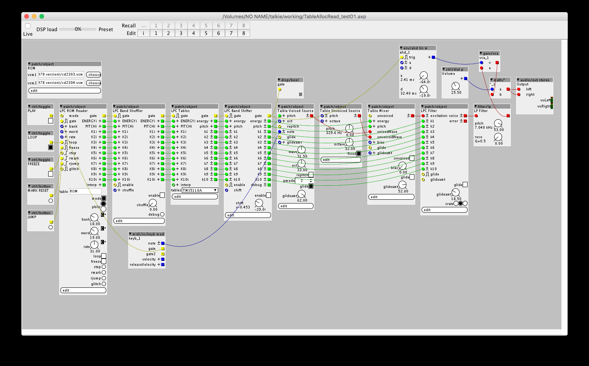

Oops. Should be fixed now. Try resyncing (again, sorry....).
a|x

Also just tried replacing the paramater value box with a dial p, by using this code line:
But using a dial doesnt seem to work. it is just playing randomly and it doesnt seem to play in a pattern anymore. Even when the dial is at zero the object is still playing. But would be nice to be able to use a dial. Then we could assign it to midi cc
Dial version:
nmpgen.axo (2.9 KB)
Just out of curiosity, how did you fix the length issue? That was what you also fixed right?
Still learning here 
EDIT:
Hmmm. I am not sure it was fixed. Now the pattern start from 2 and up. Can not select below 2.
I purposely set a minimum pattern length of 2.
I've changed it to 1, now.
I've also uploaded another version ('nmpgen2.axo'), with max 32 steps, but length and offset as knobs, so can be automated and controlled by CC. The downside is the numbers on the dial aren't accurate (the actual pattern length and offset are half the values displayed, rounded to nearest whole number).
a|x
toneburst/pattern/nmpgen2.axo
(includes help file)
Status
Active
My second Axoloti Object!
A version of nmpgen.axo, 32-steps max now, but with realtime-controllable Length parameter and added Offset control, to rotate the pattern.
I plan to add extra features in future updates. So far on the list:
Note:
a|x
toneburst/pattern/nmpgen3.axo
(includes help file)
Status
Active
A version of nmpgen2.axo, with added Trigger pattern output (Boolean pulse).
'trigthresh' parameter controls density of triggers.
Note:
a|x
toneburst/math/interpolation-pow4
(includes help file)
Status
active
description
K-Rate interpolation of positive integer input with adjustable curve from logarithmic to exponential.
Use to pre-process control values, or alter the response of envelopes.
Thanks to @johannes for interpolation algorithm.
toneburst/math/interpolation-bezier-quadratic
(includes help file)
status
active
description
K-Rate interpolation of positive integer input with adjustable 1D single-point (Quadratic) Bezier curve from logarithmic-like to exponential-like. Similar to toneburst/math/interpolation-pow4.
Use to pre-process control values, or alter the response of envelopes.
Based on code from
toneburst/math/interpolation-bezier-cubic
(includes help file)
status
active
description
K-Rate interpolation of positive integer input with adjustable 2-point (Cubic) 1D Bezier curve. Create logarithmic-like to exponential-like interpolation. Can also create 's' curves.
Use to pre-process control values, or alter the response of envelopes.
Based on code from
Work in progress.
A collection of modules based on an emulation of parts of the Texas Instruments LPC (Linear Predictive Coding) system, famously used in the 'Speak & ...' series of electronic learning aids.
Initially based on the Talkie library for Arduino by Peter Knight (hence the name), but I ended up going back to the source of much of his code, the LPC code developed for the MAME arcade/vintage computer virtual machine application.
I decided that, rather than simply porting the Arduino code to a single Axoloti object, it would be more fun to break out all the different parts of it into discrete objects.
So far, I've created voiced and unvoiced (noise) oscillators, a mixer, a controller object and the 10th-order formant filter. I've also made an object for glitching things up a bit, by reordering the connections to the filter bank bands.
I've added many new options and parameters to the objects that weren't present on the original implementation, but tried to stay largely true to the original sound (i.e. it's still all 8-bit and runs at the original 8kHz).
Next to tackle the ROM and main controller emulation.
Update:
I've got playback working (with apologies to Suzanne Vega)!
Next, to implement those classic circuit-bent sounds, but with more control than the real thing.
a|x
Made some progress on the LPC synth.
Now has loading from VSM file(s)!

The object-set now numbers 9.
a|x
Thanks!
It's mostly a compilation of other people's work, but I added quite a few twists of my own.
a|x
Anyone any ideas on what I should call the objects?
I thought just "LPC Toolkit", but that might be a bit boring.
Maybe "Squeak & Smell"...
a|x
he he I like that 
tbh, i wouldn't know what LPC toolkit was, without going and searching got it... which your unlikely to do if just browsing the user library.
hopefully this will become less of an issue in the future with a better browser... which will probably be first thing on my list after this release - I've been wanting to do this for a while... as Ive been getting the feeling the user library is getting some gems that I often overlook!
That's good to hear. I think it will make a huge difference.
There are lots of great-sounding objects in the user library I've been intending to try out myself.
I've just got myself a mini controller keyboard (Arturia MiniLab- works great), so that will help.
a|x
This has completely made my week. I am a massive fan of LPC and Iove the sound of your implementation. Brilliant. Just brilliant:grin:

{kind=link}
{kind=link}
{kind=link}
{kind=link}